? ? ?
? ? ?

 Valeria
Valeria
 ? ? ?
? ? ?
 Mucha
Mucha
 White Book
White Book
Dark Clothes set
Lv 30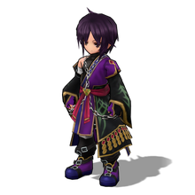
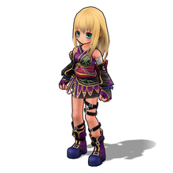
Male
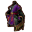
Dark Clothes / Eraser(M)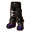
Dark Clothes / Rakhsasa(M)
Female
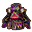
Dark Clothes / Eraser(F)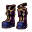
Dark Clothes / Shinai(F)
Chronicle job · Fighter
A heavy-damage job whose signature skill pierces the target's defense.
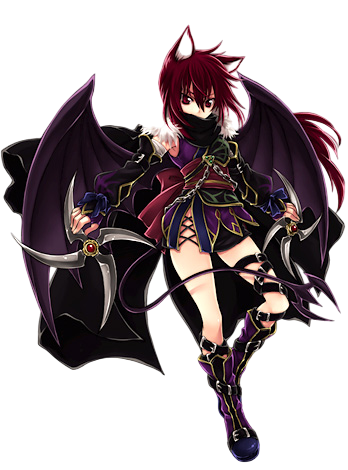
Requirement: Lv 100 or higher, Job Level 50 in either Assassin or Commando, and at least one win over the Emil Dragon.
Travel to Northern Promenade. When you meet the requirements, a mysterious creature (a cat) appears there for you to talk to.
Talk to the creature until it runs away.
Go to the Northern Cafe in Northern Promenade and talk to Valeria.
Chase the creature: find it again in Northern Promenade and follow it into the Queen Audience Room.
Follow the creature into the magic circle.
In the White World, walk straight ahead to the creature sleeping there. It asks you 3 questions.
In the room with the book (White World), talk to Mucha.
Look inside the White Book. It sends you to face Kino, the opponent of the Scout line. Then return to the room with the book.
Talk to Mucha again.
Fight Kino, the opponent of your line.
Look inside the White Book again. Take off your equipment first. You become an Eraser and reincarnate into the higher form of your race (see Races). Your level and Job Level go back to 1.
 Total Combat MasteryPassive · Max Lv 5
Total Combat MasteryPassive · Max Lv 5| Lv | ATK | S.HIT | Critical hit |
|---|---|---|---|
| 1 | +30 | +16 | +3 |
| 2 | +45 | +22 | +6 |
| 3 | +60 | +28 | +9 |
| 4 | +75 | +34 | +12 |
| 5 | +90 | +40 | +15 |
 AVOID CommunionActive buff/debuff · Max Lv 5
AVOID CommunionActive buff/debuff · Max Lv 5| Lv | Cast time | Cooldown |
|---|---|---|
| 1 | 5 sec | 2 sec |
| 2 | 5 sec | 2.5 sec |
| 3 | 5 sec | 3 sec |
| 4 | 5 sec | 3.5 sec |
| 5 | 5 sec | 4 sec |
| Lv | SP | Cast time | Cooldown | Duration | DEF ignored | Additive DEF ignored |
|---|---|---|---|---|---|---|
| 1 | 32 | 0 sec | 1 sec | 60 sec | 10% | 10% |
| 2 | 42 | 0 sec | 1.25 sec | 90 sec | 20% | 20% |
| 3 | 52 | 0 sec | 1.5 sec | 120 sec | 30% | 30% |
| 4 | 62 | 0 sec | 1.75 sec | 150 sec | 40% | 40% |
| 5 | 72 | 0 sec | 2 sec | 180 sec | 50% | 50% |
NotioPassive · Max Lv 5When damaging a player character, also deals Neutral fixed damage to that target's online possessors.
| Lv | Damage to each possessor |
|---|---|
| 1 | 4% of damage dealt |
| 2 | 8% of damage dealt |
| 3 | 12% of damage dealt |
| 4 | 16% of damage dealt |
| 5 | 20% of damage dealt |
| Lv | SP | Cast time | Cooldown | Duration | Damage bonus per hit | Bonus cap |
|---|---|---|---|---|---|---|
| 1 | 24 | 3 sec | 0 sec | 180 sec | +5% | 100%, or 50% while possessing |
| 2 | 30 | 3 sec | 0 sec | 240 sec | +5% | 100%, or 50% while possessing |
| 3 | 36 | 3 sec | 0 sec | 300 sec | +5% | 100%, or 50% while possessing |
| 4 | 42 | 3 sec | 0 sec | 360 sec | +5% | 100%, or 50% while possessing |
| 5 | 48 | 3 sec | 0 sec | 420 sec | +5% | 100%, or 50% while possessing |
Revenge AttackPassive · Max Lv 5| Lv | Trigger chance | Counterattack S.HIT bonus |
|---|---|---|
| 1 | 30% | +40 |
| 2 | 35% | +80 |
| 3 | 40% | +120 |
| 4 | 45% | +160 |
| 5 | 50% | +200 |
 CloseoutActive self-buff · Max Lv 5
CloseoutActive self-buff · Max Lv 5| Lv | SP | Cast time | Cooldown | Avoid chance | Duration | PvP duration | Reuse timer |
|---|---|---|---|---|---|---|---|
| 1 | 100 | 1.5 sec | 1 sec | 30% | 180 sec | 60 sec | 180 sec |
| 2 | 100 | 1.25 sec | 1 sec | 40% | 80 sec | 40 sec | 180 sec |
| 3 | 100 | 1 sec | 1 sec | 50% | 60 sec | 20 sec | 180 sec |
| 4 | 100 | 0.75 sec | 1 sec | 70% | 30 sec | 10 sec | 180 sec |
| 5 | 100 | 0.5 sec | 1 sec | 80% | 15 sec | 5 sec | 180 sec |
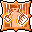
DevilActive physical attack · Max Lv 3| Lv | SP | Cast time | Cooldown | Hits | Damage rate per hit | Debuff chance | Debuff duration | Player stat down | Monster stat down |
|---|---|---|---|---|---|---|---|---|---|
| 1 | 15 | 1.5 sec | 0.5 sec | 4 | 200% | 10% | 30 sec | AGI -15 | No additional stat down |
| 2 | 17 | 1.5 sec | 0.5 sec | 4 | 250% | 20% | 45 sec | AGI/DEX/VIT -17 | S.AVOID/DEF/S.HIT -17% |
| 3 | 19 | 1.5 sec | 0.5 sec | 4 | 300% | 30% | 60 sec | AGI/DEX/VIT -20 | S.AVOID/DEF/S.HIT -20% |
| Lv | SP | Cast time | Cooldown | Damage rate | Stiffness chance | Stiffness duration | Reuse timer |
|---|---|---|---|---|---|---|---|
| 1 | 26 | 2 sec | 1 sec | 200% | 20% | 5 sec | 10 sec |
| 2 | 32 | 1.75 sec | 1 sec | 270% | 25% | 5 sec | 15 sec |
| 3 | 38 | 1.5 sec | 1 sec | 340% | 30% | 5 sec | 20 sec |
| 4 | 44 | 1.25 sec | 1 sec | 410% | 35% | 5 sec | 25 sec |
| 5 | 50 | 1 sec | 1 sec | 480% | 40% | 5 sec | 30 sec |
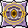
Shadow StitchActive · Max Lv 5| Lv | MP | SP | Cast time | Cooldown | Reuse | Stiffness chance | Stiffness duration | PvP chance | PvP duration | Instant death chance |
|---|---|---|---|---|---|---|---|---|---|---|
| 1 | 2 | 13 | 2.5 sec | 1.5 sec | 5 sec | 25% | 3 sec | 25% | 6 sec | 1% |
| 2 | 4 | 16 | 2.0 sec | 1.0 sec | 8 sec | 40% | 4 sec | 30% | 5 sec | 1% |
| 3 | 6 | 19 | 1.5 sec | 0.5 sec | 10 sec | 55% | 5 sec | 35% | 4 sec | 2% |
| 4 | 8 | 22 | 1.0 sec | 0.5 sec | 13 sec | 70% | 6 sec | 40% | 3 sec | 2% |
| 5 | 10 | 25 | 0.5 sec | 0.5 sec | 15 sec | 85% | 8 sec | 45% | 2 sec | 3% |
Poison MasterPassive · Max Lv 5| Related skill | Effect on Venom Blast |
|---|---|
| Poison Mist | First hit gains +200% + 30% x Poison Mist Lv damage rate |
| Detonate | Second hit gains +500% + 30% x Detonate Lv damage rate |
| Poison Master learned | Enables Unrecoverable application during Venom Blast's status burst |
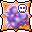
Venom BlastActive physical attack · Max Lv 5| Lv | SP | Cast time | Cooldown | Damage rate |
|---|---|---|---|---|
| 1 | 30 | 2 sec | 1 sec | 280% first, 250% blast |
| 2 | 40 | 1.5 sec | 1 sec | 300% first, 300% blast |
| 3 | 50 | 1.5 sec | 1 sec | 320% first, 350% blast |
| 4 | 60 | 1.5 sec | 1 sec | 340% first, 400% blast |
| 5 | 70 | 1 sec | 1 sec | 360% first, 450% blast |
 SetsunaActive physical attack · Max Lv 5
SetsunaActive physical attack · Max Lv 5| Lv | SP | Cast time | Cooldown | Damage rate | PvP damage rate | Critical hit |
|---|---|---|---|---|---|---|
| 1 | 90 | 2 sec | 0.5 sec | 1,800% | 900% | +10 |
| 2 | 110 | 2 sec | 0.5 sec | 2,350% | 1,175% | +15 |
| 3 | 130 | 2 sec | 0.5 sec | 2,900% | 1,450% | +20 |
| 4 | 150 | 1.5 sec | 0.5 sec | 3,450% | 1,725% | +30 |
| 5 | 170 | 1.5 sec | 0.5 sec | 4,000% | 2,000% | +40 |



Dark Clothes / Eraser(M)
Dark Clothes / Rakhsasa(M)
Dark Clothes / Eraser(F)
Dark Clothes / Shinai(F)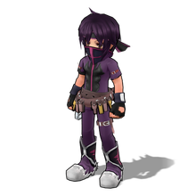
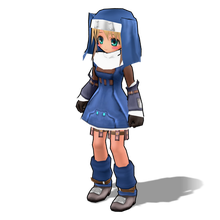
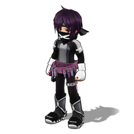
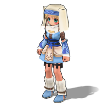
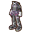
Soundless Suit(M)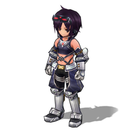
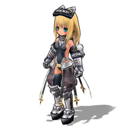
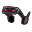
Hidden / Abs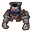
Hidden / Eraser(M)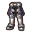
Hidden / Arcs (M)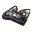
Hidden / Quanti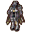
Hidden / Eraser(F)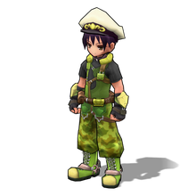
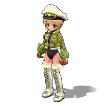
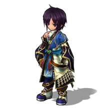
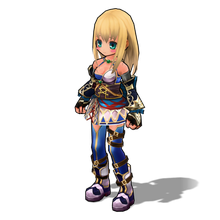
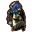
[True] Dark Cloth / Eraser (M)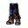
[True] Dark Cloth / Rakshasa (M)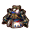
[True] Dark Cloth / Eraser (F)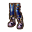
[True] Dark Cloth / Setsuna (F)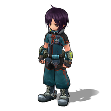
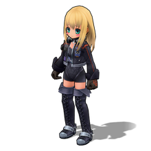